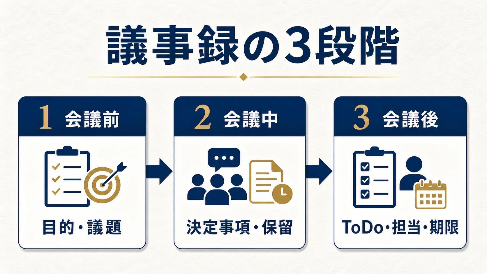

MEETING MINUTES / PRACTICAL GUIDE
議事録の書き方｜決定事項とToDoが残るテンプレート
議事録は、会話を全部記録するためのものではありません。会議が終わったあとに「何が決まり、誰が、いつまでに動くのか」を確認できる状態にするための記録です。
議事録の役割は「発言の記録」ではなく「次の行動の共有」
議事録を書くとき、会議中の発言を一言ずつ残そうとすると、作成者の負担が大きくなります。しかも、発言が多い議事録ほど、重要な決定事項が埋もれがちです。
実務で役に立つ議事録は、欠席者が読んでも判断できる記録です。最低限、次の4点が分かるようにします。
- 何のための会議だったか
- 何が決まったか、何が決まっていないか
- 誰が担当するか
- いつまでに何をするか
議事録の書き方は3段階で考える
議事録の項目を会議の時間軸に沿って分けると、記入漏れを減らせます。

目的・議題を決める
何を決める会議なのか、話す順番は何かを先に置きます。
決定・保留を分ける
結論が出たことと、追加確認が必要なことを混ぜません。
ToDoを配る
担当者と期限が決まって初めて、議事録が行動につながります。
1. 会議前に「目的」と「議題」を置く
タイトルだけでなく、「この会議が終わると何が決まっているべきか」を1文で書きます。議題は、話したいテーマを箇条書きにすると、会議後の整理もしやすくなります。
2. 会議中は「決定事項」と「保留事項」を分ける
決定事項には、合意した内容を短く書きます。反対に、結論が出なかったことは保留事項として残します。保留事項を消してしまうと、次回の会議で同じ議論を繰り返す原因になります。
3. 会議後は「ToDo・担当者・期限」をセットにする
「確認する」「検討する」だけでは、誰の仕事か分かりません。担当者｜やること｜期限の形にすると、そのままタスク管理へ移せます。
そのまま使える議事録の項目
| 項目 | 書く内容 | 記入例 |
|---|---|---|
| 会議名 | 会議の目的が分かる名前 | 営業定例会 |
| 日時・参加者 | 開催日、参加者、欠席者 | 2026/7/12、田中・佐藤 |
| 議題 | 話し合うテーマ | 次月の新規提案について |
| 決定事項 | 合意した内容 | 新しい提案書を7月から使う |
| 保留・確認事項 | 追加確認が必要な内容 | 価格表の最新版を確認 |
| ToDo | 担当者・作業・期限 | 田中｜提案書作成｜7/18 |
議事録でよくある4つの失敗
- 発言をそのまま全部書く：重要な決定が見つけにくくなります。
- 決定と保留が混ざる：決まったことを誤解する原因になります。
- 担当者が書かれていない：「誰かがやる仕事」になり、実行されません。
- 期限がない：次の会議まで先送りされます。
議事録をAIで効率化するときの確認点
文字起こしや要約をAIに任せると、議事録の下書きは速くなります。ただし、固有名詞、数字、否定表現、決定事項の取り違えがないかは人が確認してください。
特に社外秘の資料や個人情報を扱う会議では、どのサービスに何を送るか、保存・学習に使われるか、誰が最終確認するかを先に決めます。AI導入前の論点はAI導入リスク・社内ルール診断で整理できます。
AIの出力をそのまま正式記録にするのではなく、「AIが下書きし、人が決定事項とToDoを確認して共有する」という役割分担にすると、効率と品質のバランスを取りやすくなります。実際の変換イメージは議事録AI体験デモで確認できます。
よくある質問
議事録は会議中に完成させるべきですか？
会議中に全体を完成させる必要はありません。会議中は決定事項と保留事項を拾い、終了後にToDo・担当者・期限を整えると負担を抑えられます。
議事録に発言者名はすべて必要ですか？
すべての発言者名を残す必要はありません。意思決定に関係する提案者、担当者、確認が必要な人が分かる程度に整理します。
議事録をAIに作らせるときの注意点は？
誤りの確認者を決め、機密情報・個人情報の入力範囲とサービスの保存条件を確認してください。AIの出力は正式な記録にする前に人が確認します。